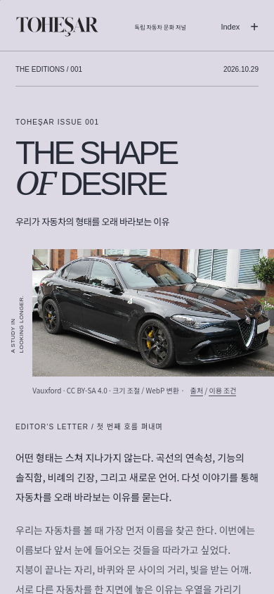
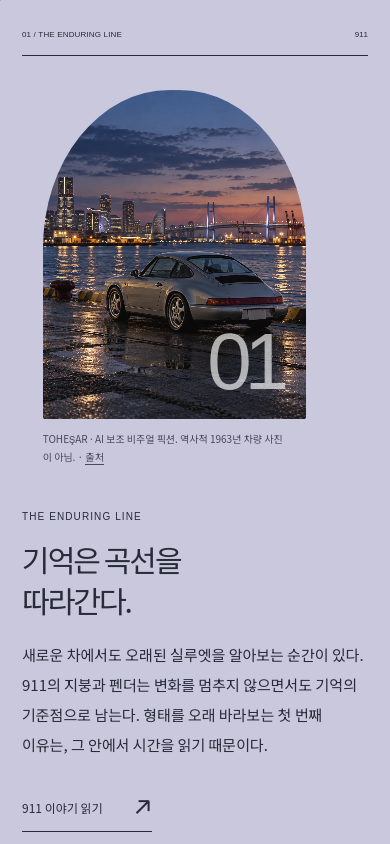
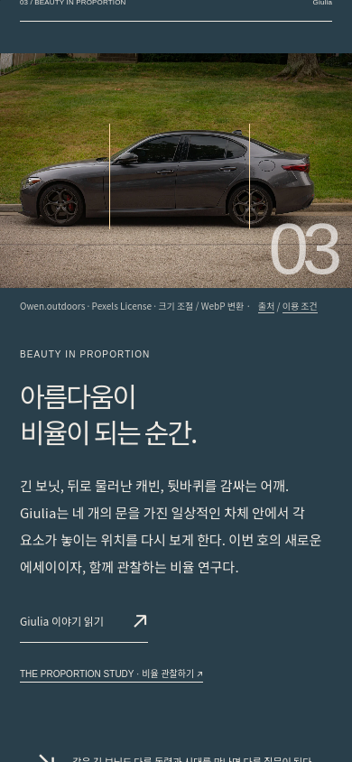
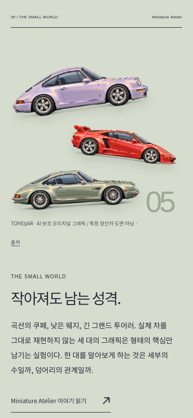
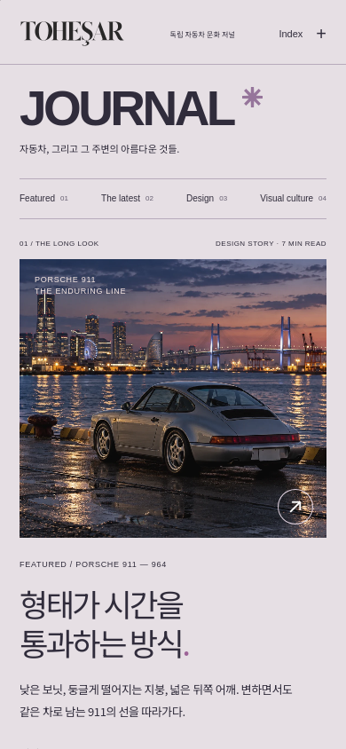
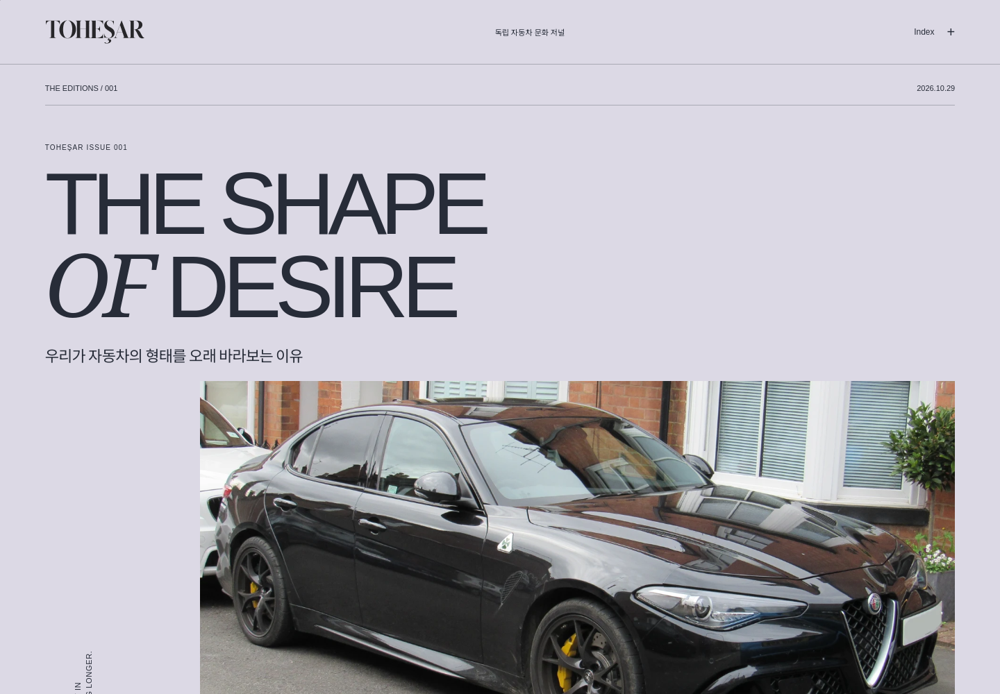

WebKit의 iPhone 크기 검토 화면. 실제 iPhone 하드웨어 검증은 하지 않았습니다.
Chromium / WebKit: 새 지면 54 경로·화면 크기 검사, 탐색·검색·뒤로 가기·역스크롤·회전·동작 줄이기·No-JS 확인. 기존 006 회귀 검사 22건 별도 통과. 사진 라이선스와 연식·트림 식별 한계는 기사 출처에서 확인할 수 있습니다.




